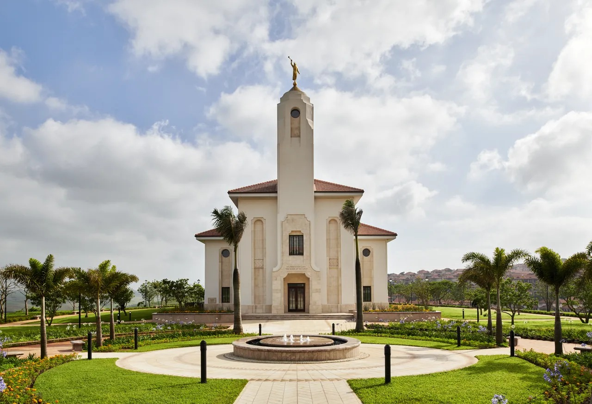
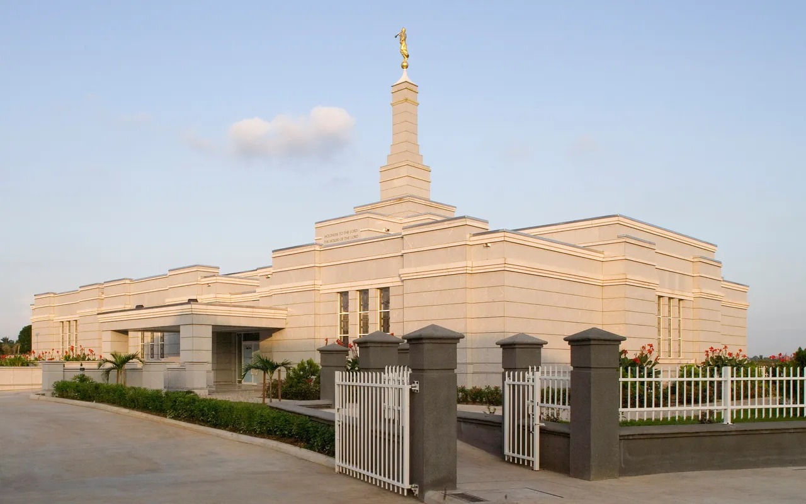
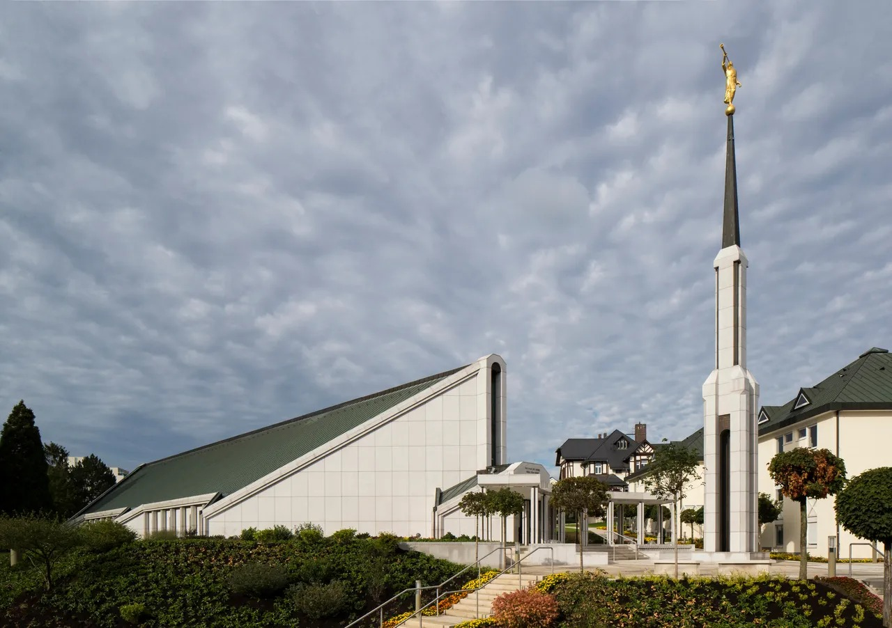

Durban South Africa TempleJohannesburg South Africa TempleHarare Zimbabwe TempleKinshasa Democratic Republic of the Congo TempleNairobi Kenya Temple

Aba Nigeria TempleHelsinki Finland Temple

Frankfurt Germany TempleThe Hague Netherlands Temple